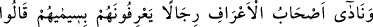
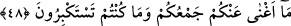

etmişlerdir. Bunlar oradan hem cennet hem de cehennem ehline bakarlar.
Bunlar, nimetleriyle sefâ süren, onlarla meşgul olan cennet ehlini gördüklerinde
“cennet ehline: “Selam size!” diye seslenirler.” Yani içinde bulunduğunuz ebedî
nimetleriniz, köşkleriniz ve hûrileriniz hayırlı olsun. Afiyetle onlardan istifade edin.”
derler.
Allah Teâlâ, sonra A‘raf ashâbının himmetlerinin yüceliğinden şöyle haber verir:
“Bunlar henüz oraya girmemişlerdir. Fakat girmeyi çok istemektedirler.” Yani, onlar
cennetin nimetlerini ve yüksek derecelerini müşahede ettiler, fakat onlardan hiçbir şeye
ufacık bir meyil bile göstermediler. Ondan geçtiler ve ona girmediler. Onlar A‘raf
üzerinde Allah’a vâsıl olmayı ve Allah Teâlâ’nın “cennetime gir!” (el-Fecr, 89/30)
buyurarak kendisine izafe ettiği cennetine girmeyi ummaktadırlar.
Allah Teâlâ’nın onları hangi derekelerden kurtarıp hangi iyiliklere ulaştırdığını görüp
Allah’ın kendilerine olan nimetinin kıymetini bilmeleri için “gözleri cehennem ehli
tarafına çevrildiği vakit:
Kemâlât ehlinin gönlüne doğan nefsânî havâtır; dünyalık, makam, başkalarının
nazarında makbûl olma ve halkla meşguliyet ile imtihan olunmaları da bu kabildendir.
Bunlardan maksad; uzletin, tecrîdin ve halvetlerde Allah ile ünsiyetin kıymetini
bilmeleridir. Hakkıyla şükrü edâ etmeleri ve nimeti görmeleridir.
“Ey Rabbimiz! bizi şu zalim toplulukla beraber bulundurma.” yani, onların
vasıflarından, huylarından, derekelerinden ve bulundukları durumdan kurtardıktan sonra
bir daha onların yanında kılma ve onların arasına dahil etme! “derler.” et-Te’vîlâtü’n-
Necmiyye’de böyle geçmektedir.
48. (Yine) A’raf ehli simalarından tanıdıkları birtakım adamlara seslenerek derler
ki: “Ne çokluğunuz ne de taslamakta olduğunuz büyüklük size hiçbir yarar
sağlamadı.
“A‘raf ehli” Bunlardan maksad, peygamberlerden ve mahşer halkının eşrâfından
dereceleri yüksek olan kimselerdir. Çünkü, sonraki ayete en uygun olan budur. Zîrâ,
amelleri az olan kimseler “cennete girin” demeye layık değillerdir.
“yüzlerindeki işaretleriyle tanıdıkları bir takım adamlara da seslenerek derler ki:”
Bunlar, Ebû Cehil, Velid b. Muğire, Âs b. Vâil ve benzeri kâfirlerin ileri gelenleri olan
kimseleri cehennem halkı arasında gördüklerinde onları, hallerinin berbatlığına delâlet
eden yüzlerindeki işaretlerden tanıyacaklardır. Azarlayıcı ve alaylı bir tavırla: “Ne
topluluğunuz” yani, tâbileriniz, taraftarlarınız, topladığınız mal “ne de büyüklük
taslamanız,” halka karşı devamlı kibriniz, yani büyüklenmeniz, azaba mâni olmadı